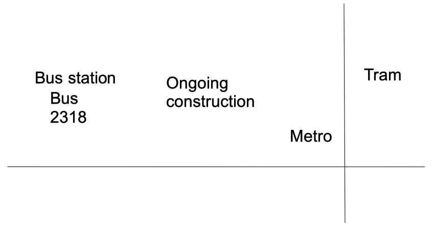
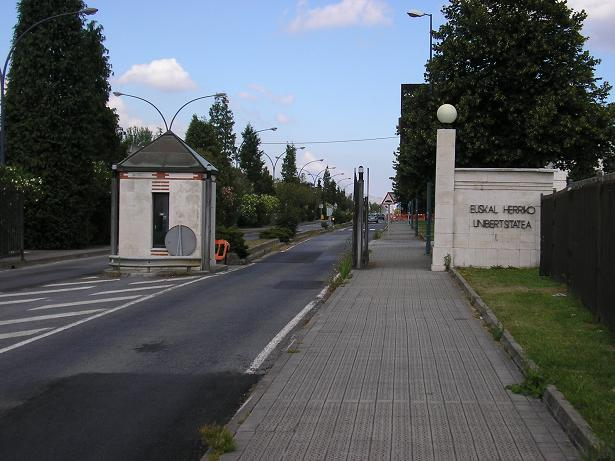
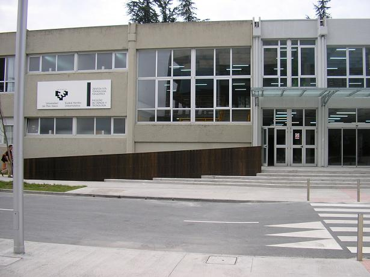

<!DOCTYPE HTML PUBLIC "-//W3C//DTD HTML 4.0 Transitional//EN">
<html>
<head>
	<meta http-equiv="content-type" content="text/html; charset=utf-8"/>
	<title>Geza Toth - Contact</title>
	<meta name="generator" content="LibreOffice 5.2.0.4 (MacOSX)"/>
	<meta name="created" content="00:00:00"/>
	<meta name="changed" content="2018-06-07T20:45:07.089786494"/>
	<meta name="Originator" content="Microsoft Word 12"/>
	<meta name="ProgId" content="Word.Document"/>
	<meta name="created" content="00:00:00">
	<meta name="changed" content="2018-06-07T20:39:30.131741277">
	<meta name="created" content="2007-07-29T00:00:00.018465400">
	<meta name="changed" content="2018-06-07T20:35:54.602314743">
	<style type="text/css">
		p { color: #000000 }
		a:link { color: #0000ff }
		a:visited { color: #800080 }
	</style>
</head>
<body lang="en-US" text="#000000" link="#0000ff" vlink="#800080" dir="ltr">
<p lang="en-GB"><font size="5" style="font-size: 18pt"><b>How to get
around in Bilbao</b></font></p>
<p align="justify"><i><b>How to get to hotels and the university
residences from the airport by bus:</b></i></p>
<ul>
	<li/>
<p align="justify">To the hotel Barceló nervión: Take bus
	3247 to the final station (Termibus station). Then take the the tram
	to Pio Baroja. Then cross the river. <span style="font-weight: normal">See
	<a href="BarceloNervion_SanMameswith_tram_line.png">map</a>.</span></p>
	<li/>
<p align="justify">To the residence Blas de Otero: Take bus
	3247 to the final station (Termibus station). Then take the metro
	till Abando station. Then walk or take the train till Zabalburu
	station.</p>
	<li/>
<p lang="en-GB">To the residence Miguel Unamuno: Take bus 3247
	to the final station (Termibus station). Then take the metro to
	Sarriko.</p>
</ul>
<p><i><b>How to get to the department from Bilbao by bus:</b></i> 
</p>
<p align="justify">The department is at the Leioa campus of
University of the Basque Country (UPV/EHU). Leioa is a town close to
Bilbao. The buses 2312, 2314 and 2318 go to the university from
Bilbao. 
</p>
<ul>
	<li/>
<p align="justify">Easiest: Bus 2318, starts from the Termibus
	station at the football stadium. The Termibus station is connected
	to the metro station San Mamés, EuskoTren, and Renfe. (See the stop
	on the map above.)</p>
	<li/>
<p align="justify">Alternative 1: Bus 2314, starts from the
	Abando railway station. 
	</p>
	<li/>
<p align="justify">Alternative 2: Bus 2312, starts from the
	Zabalburu square close to the playground in the middle of the
	square. It starts to go uphill when leaving for Leioa. 
	</p>
</ul>
<p align="justify">Map of the Termibus station with the final station
of the 2318 bus:</p>
<ul>
	<p>
  <br clear="left"/>
</img>
</p>
</ul>
<p align="justify">Temporarily, the Termibus station moved to the
left on the map. 
</p>
<p align="justify">Here one can see the schedule of buses: <a href="http://www.bizkaia.net/herri_lanak/bizkaibus/ca_index.htm">Bizkaibus</a>.
Just write, from which place to which place you want to go.</p>
<p align="justify"><i><b>Accommodation:</b></i></p>
<ul>
	<li/>
<p align="left"><i>Hotel Barceló Nervión: Pº Campo
	Volantín, 11, 48007 Bilbao<br/>
Tel.: +34 94 4454700</i></p>
	<li/>
<p align="left"><i>Residencia Blas de Otero: </i><span style="font-variant: normal"><span style="font-style: normal">Calle
	de las Cortes, 38, 48003 Bilbao<br/>
</span></span>Tel.: +34 944 343
	200</p>
	<li/>
<p align="left"><i>Colegio Mayor Miguel Unamuno: </i>Av.
	Lehendakari Aguirre, 140, 48015 Bilbao<br/>
Tel.: +34 946 017 499</p>
</ul>
<p align="justify"><i><b>How to get to the department from the
university residences and hotels:</b></i> 
</p>
<ul>
	<li/>
<p align="justify"><span style="font-weight: normal">Hotel
	Barcelo Nervion: cross the river, then you can use the tram to get
	to San Mamés and then take the bus 2318 to the University. See <a href="BarceloNervion_SanMameswith_tram_line.png">map</a>.</span></p>
	<li/>
<p align="justify" style="font-weight: normal">Residencia
	Universitaria Blas de Otero is close to the Zabalburu station. Take
	the bus 2312 from there.</p>
	<li/>
<p align="justify" style="font-weight: normal">Residencia
	Universitaria Miguel Unamuno: there is a stop of the bus 2314 in
	front of the residence. You can go to the Universiyt with it.</p>
</ul>
<p align="justify"><i><b>How to get to the department on the Leioa
campus</b></i></p>
<p>The following map summarizes the part of the campus you need to
know, in order to get to the building of Sciences. 
</p>
<p>
</p>
<p><a name="internal-source-marker_0.9434925992973149"></a><b>Theoretical
Physics Department</b>: After you are at the main entrance of
sciences, go straight until you can. Then, turn left, and again, go
straight until you can, even when crossing iron doors. Then, you are
at a staircase. Go down two levels, and you are at level -2,
Department of Theoretical Physics. It is on the ground floor, the
reason for the -2 is that the building is on a hill side.<br/>
<br/>
<b>Our
offices</b>: they are not at the department. The way to get there is
as follows: enter the main entrance. Turn left immediately when you
can. Go on the corridor until you reach the end. There is a
staircase. Go up one level and continue on the same direction, as you
were walking in the long corridor. Go until you can. At some point
you can proceed slightly left and right. Choose slightly left. My
office is A6.P1.4. 
</p>
<p>Some pictures to help the orientation:</p>
<p align="left">

</p>
<p align="left">The entrance of the University.</p>
<p align="left"><br/>
<br/>

</p>
<p align="left">

</p>
<p align="left">Main entrance of the Science building. The text says
“Zientzia eta Teknologia Fakultatea / Facultad de Ciencia y
Technologia”. 
</p>
<p align="justify">
</p>
<p>Library</p>
<p align="justify"><i><b>How to get to the university from Getxo:</b></i></p>
<ul>
	<li/>
<p align="justify">Bus 2161: Leaves from the neighborhood of
	the Areeta metro station. Leaves all day approximately in every 20
	minutes.</p>
	<li/>
<p align="justify">Bus 2162: Leaves from the neighborhood of
	the Bidezabal and Algorta metro stations. Leaves all day till not
	too late every hour 30 minutes (e.g., 9:30).</p>
	<li/>
<p align="justify">Bus 2164: Leaves from the neighborhood of
	the Bidezabal and Aiboa metro stations. There is a bus station close
	to the swimming pool. Leaves at 8:05 9:05 10:05 14:05 15:05.</p>
</ul>
<p align="justify"><i><b>Public transport: </b></i>
</p>
<ul>
	<li/>
<p align="justify"><span style="font-variant: normal"><span style="font-style: normal">METRO:
	There are elevators at all the stations. It comes quite frequently.
	Tickets can be bought at ticket machines. You can buy single
	tickets, however, if you want to travel more than once, which is
	typically the case, you can also have prepayed tickets called
	</span></span><i>Creditrans</i> <span style="font-variant: normal"><span style="font-style: normal">for
	5,10,15 euros. You can also buy these in newspaper shops. Note that
	the metro goes to Getxo, but unfortunately not to the University
	since it is on a hill.</span></span></p>
	<li/>
<p align="justify" style="font-variant: normal; font-style: normal">
	BUS: You can pay for your bus tickets with coins when you enter the
	bus at the front door or with Creditrans cards. Note that one side
	of the Creditrans ticket is for the bus, the other side is for the
	metro. It is always printed how much money you have left on the
	ticket. When you enter the bus and validate your ticket, you have to
	enter the number of the zone you are traveling to. Bilbao is zone 1,
	the IUniversity at Leoa, Getxo and the airport are zone 2.</p>
	<li/>
<p align="justify"><span style="font-variant: normal"><span style="font-style: normal">TRAM:
	Do not forget to validate the ticket before</span></span> <span style="font-variant: normal"><span style="font-style: normal">entering
	the tram. On the tram it is not possible any more.</span></span></p>
</ul>
<p><script>
var gaJsHost = (("https:" == document.location.protocol) ? "https://ssl." : "http://www.");
document.write(unescape("%3Cscript src='" + gaJsHost + "google-analytics.com/ga.js' type='text/javascript'%3E%3C/script%3E"));


</script><script>
try {
var pageTracker = _gat._getTracker("UA-13204477-5");
pageTracker._trackPageview();
} catch(err) {}


</script><br/>
<br/>

</p>
</body>
</html>